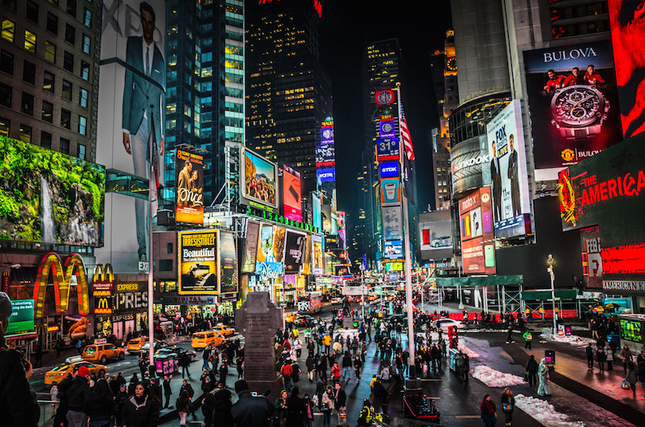

Statue of Liberty
America's most iconic sight, the Statue of Liberty is at the top of every first-time visitor's list of things to do in New York. It was France's gift to America. Built in 1886, it remains a world symbol of freedom and is one of the top attractions in America. It is one of the world's largest statues, standing just under 152 feet tall from the base to the torch, and weighing approximately 450,000 pounds. Visiting Ellis Island and the Statue of Liberty is an inspiring, striking experience. As dual symbols of freedom and hope, these incredible monuments and their museums give proof to the story of immigration and recognize the human spirit of our nation's ideals.
Empire State Building
The Empire State Building is one of New York's most famous landmark buildings and key tourist attractions. The 381-meter-tall, 102-storey building was the tallest in the world until the 1 World Trade Center tower rose higher, 41 years later. Topped with a mooring mast for airships, the Empire State Building immediately became a landmark and a symbol for NYC when it opened in 1931. There are two observations decks in the tower, on the 86th floor and 102nd floor. Both offer impressive views and interesting facts about the building's extensive history and importance. The Empire State Building has made appearances in over 250 films and was named “America's Favorite Architecture.”
Times Square

Times Square is the place to go in New York in the evening, but still exciting at any time of day. This is the location of New York's New Year's Eve Celebrations and the famous "ball drop" at midnight, when the square and surrounding streets are filled with people. Times Square is busy and perpetually crowded but has its own unique appeal. Bleachers set up at one end are a great place to take a break and appreciate the scene. Formerly Longacre Square, Times Square was named in 1904 after the New York Times tower. The newspaper first posted current headlines along its moving sign, the first of its kind in the world, in 1928. If you've had your fill of sitting on the bleachers and are looking for something fun to do either as a group or a couple, stroll over to the Madame Tussaud's Wax Museum. The eerily life-like wax figurines feature NYC icons like Jimmy Fallon and the set of The Tonight Show, Broadway cast members, and shows where you actually get to dress up and participate. The building's glass dome protrudes over Times Square for awesome views.